This dashboard summarizes daily market price data from Pune district for onion and tomato using the CSV extracts available in the project. The machine-learning section uses a ridge regression model with lagged price features, calendar features, and weather information aggregated from all six available NASA POWER weather files to predict the next observed daily average modal price.
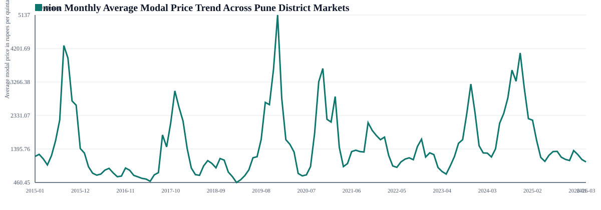
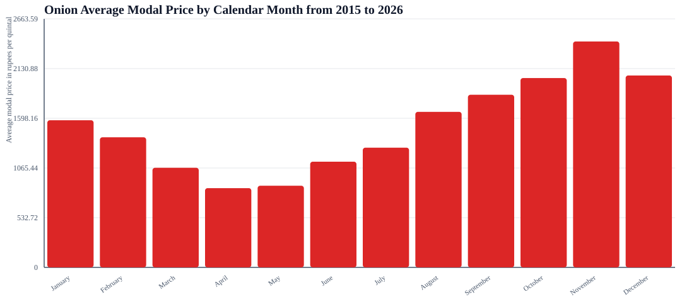
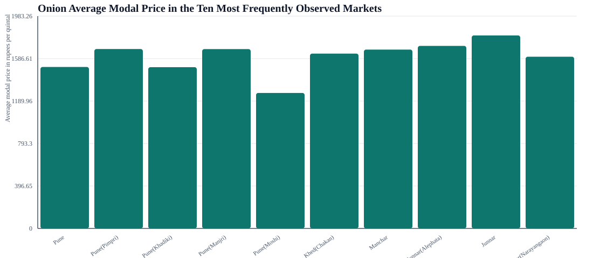
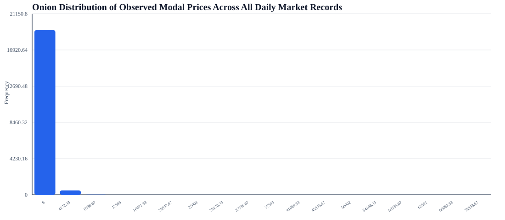
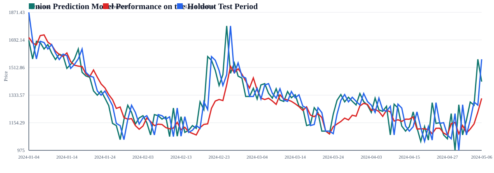
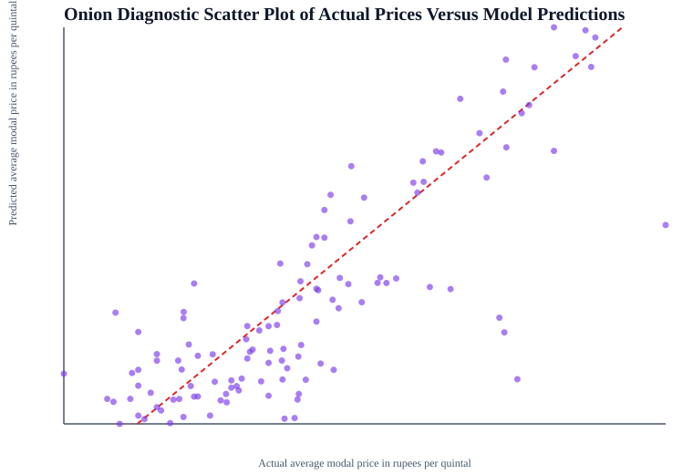
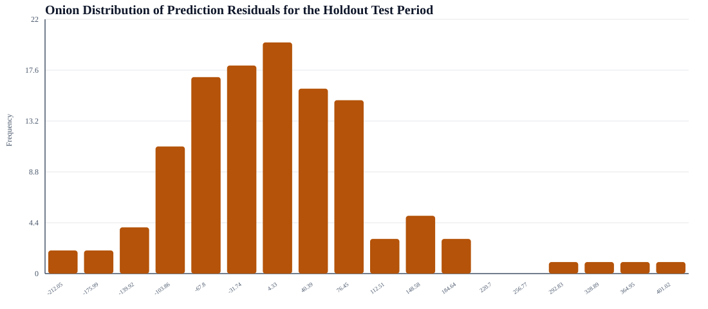
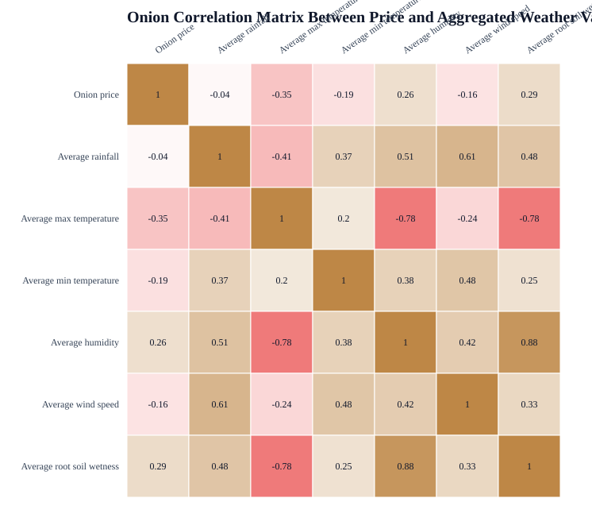
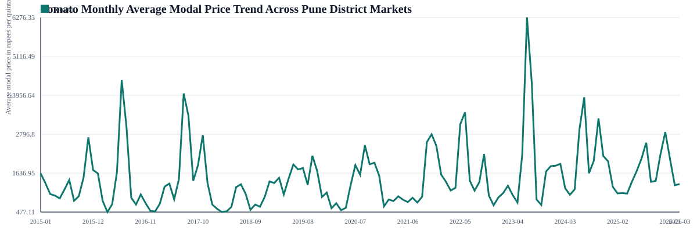
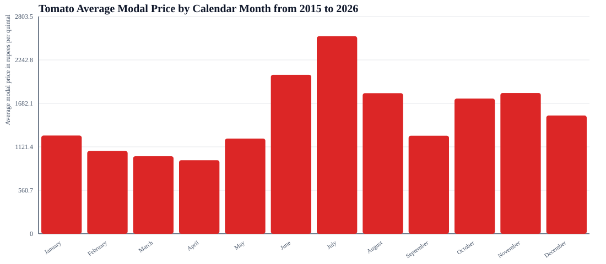
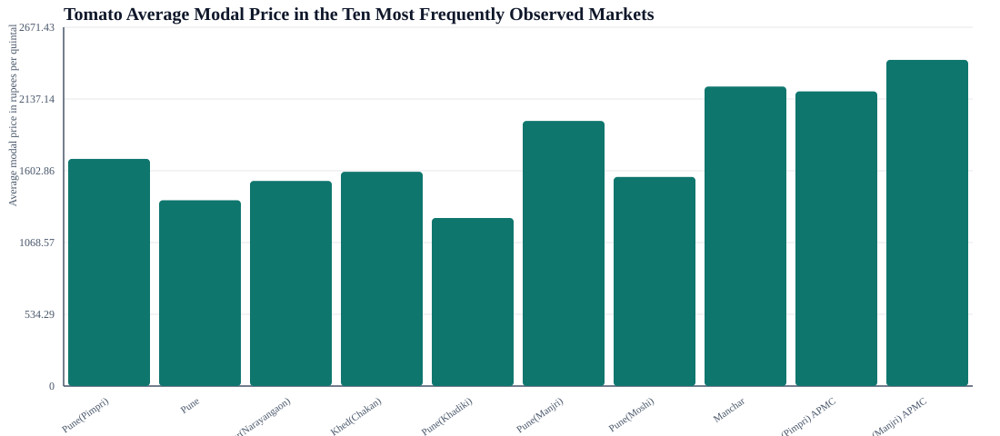
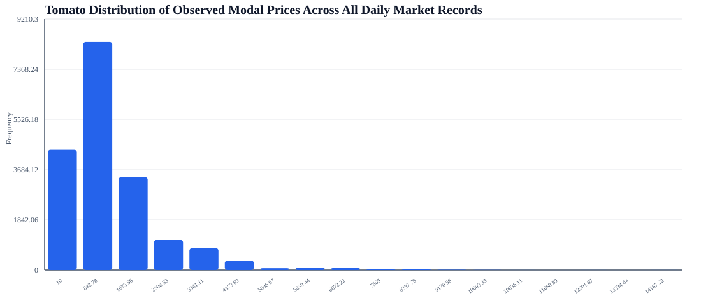
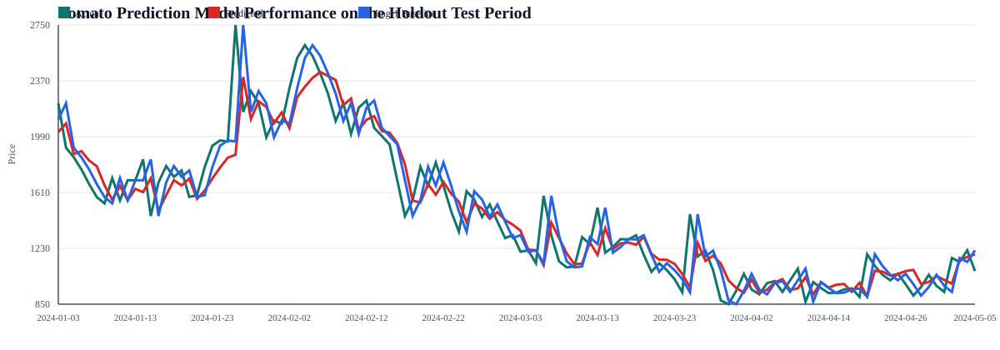
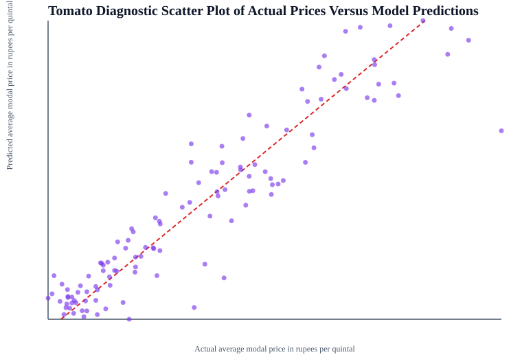
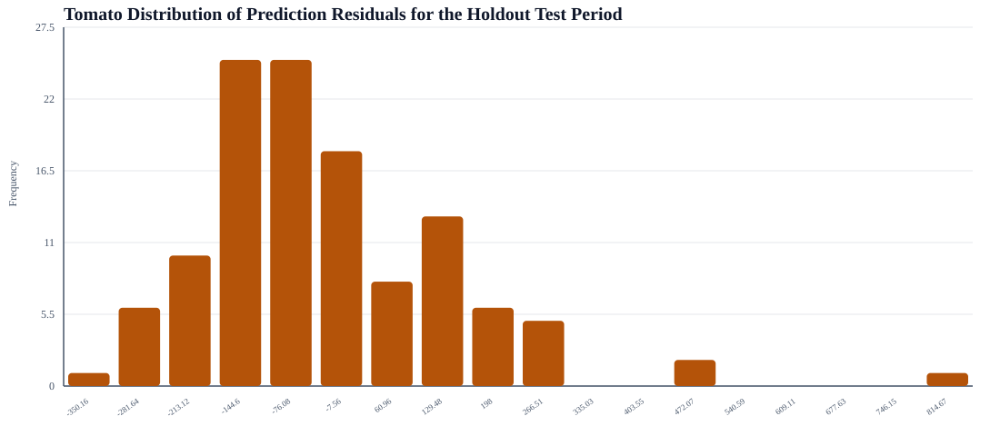
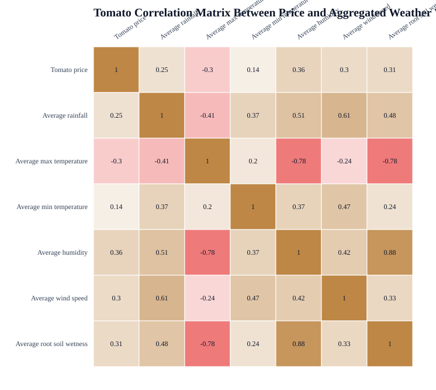